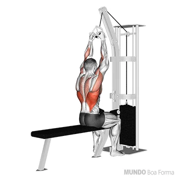

Exercícios para Peitoral
Flexão de braço

Supino reto

Supino inclinado

Crucifixo

Exercícios para Bíceps
Rosca Direta

Rosca Concentrada

Rosca Scott

Rosca Martelo

Exercícios para Costa
Remada Sentada

Remada com barra

Pull-down

Puxada no Pulley
Exercícios para Tríceps
Triceps no banco

Triceps Deitada

Puxada no Pulley

Tríceps Francês

Pux. Franc. no Pulley

Exercícios para Ombors
Desen. Lateral

Elevação Frontal

Desen. Com Halt.

Rem Com Halt.

Exercícios para Perna
Agachamento

Búlgaro

Abdutora

Agachamen sumo

Elevação Pélvica

Leg Press

Extensora

Adultora

Flexora

Panturrilha